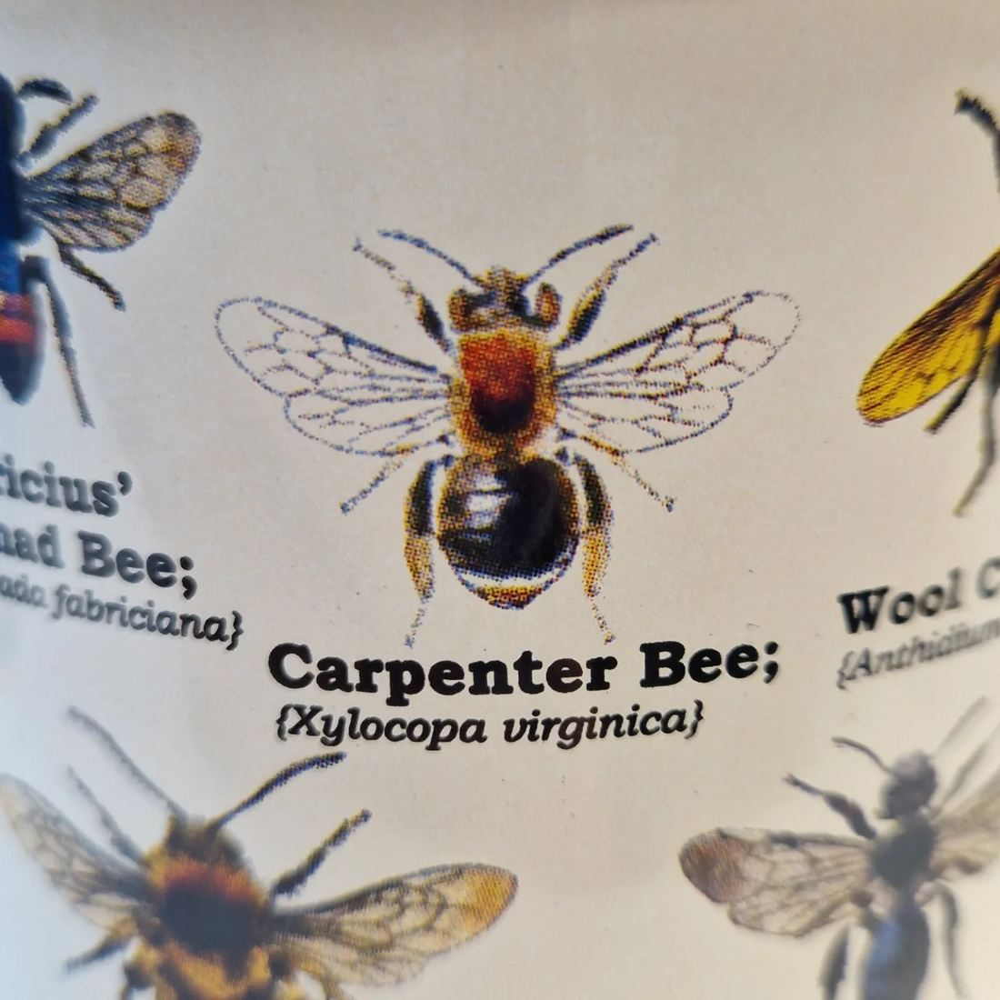
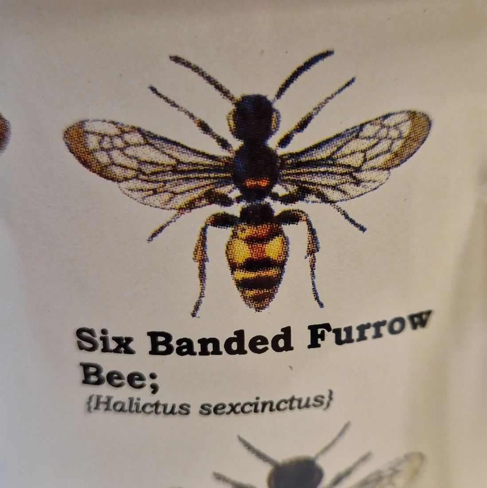

Roodgatje, geen houtbij
2 oktober 2023 · Gift Republic
- Op de foto
- Xylocopa virginea
- Het ging over
- Roodgatje (Andrena haemorrhoa)


Dear @giftrepublicltd, what an incredible mug and very nice you have gotten some of the species right. However, naming an Orange-tailed Mining Bee (Andrena heamorrhoa) a Xylocopa virginea is unfortunately very wrong ;-) The next time all of them with the right species. The Nomad bee is ofcourse also not a Furrow bee!